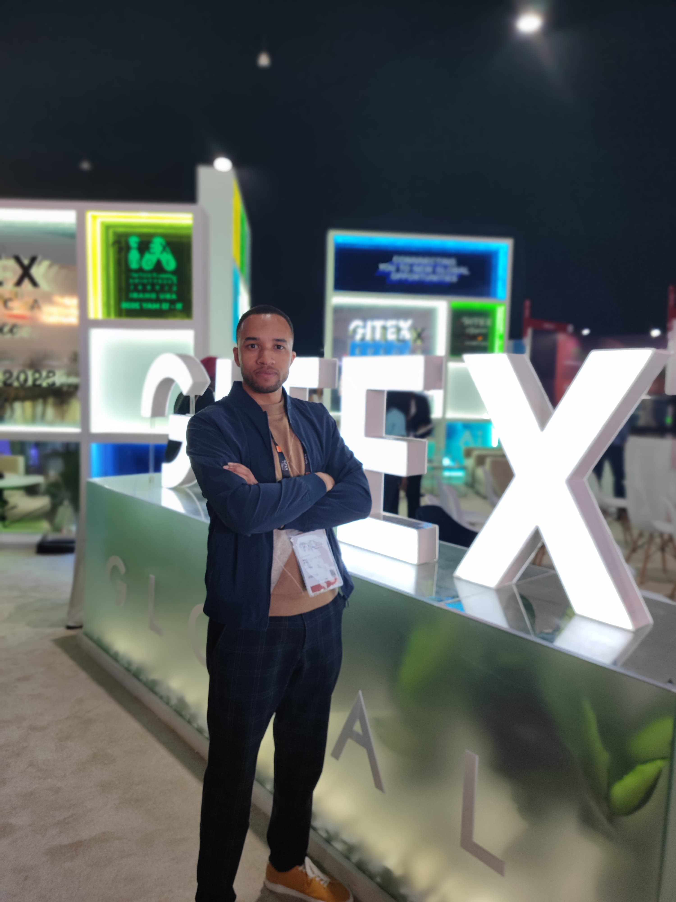
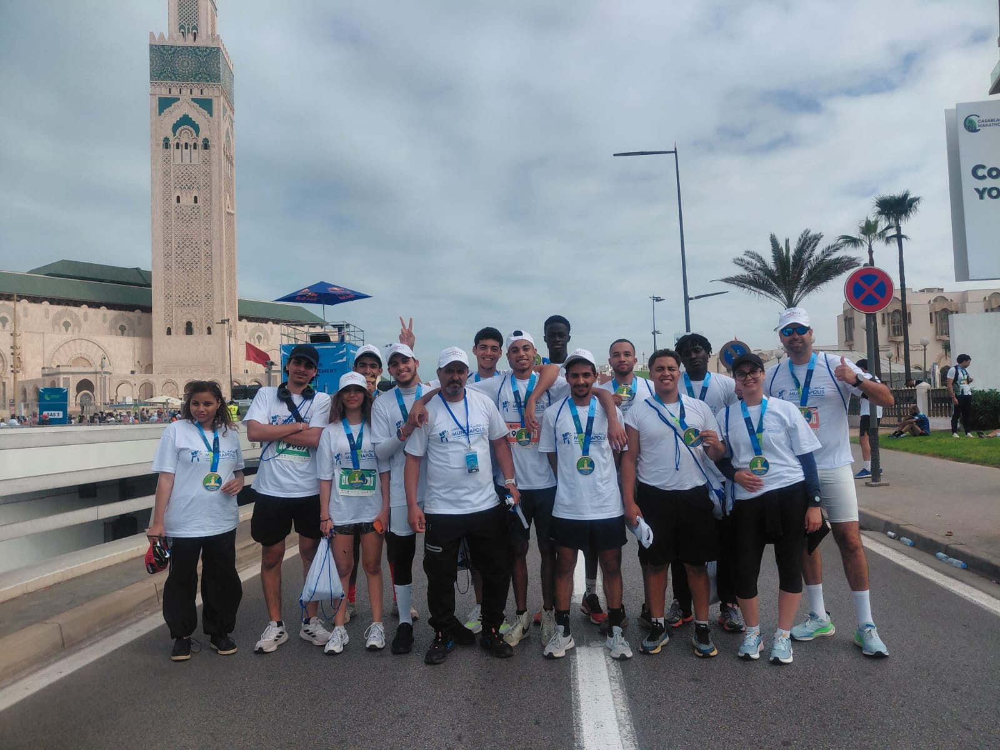
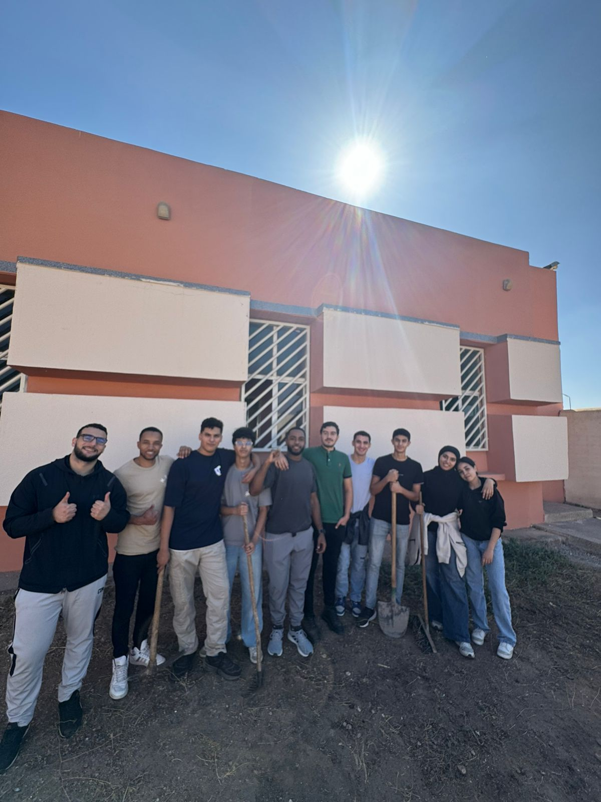
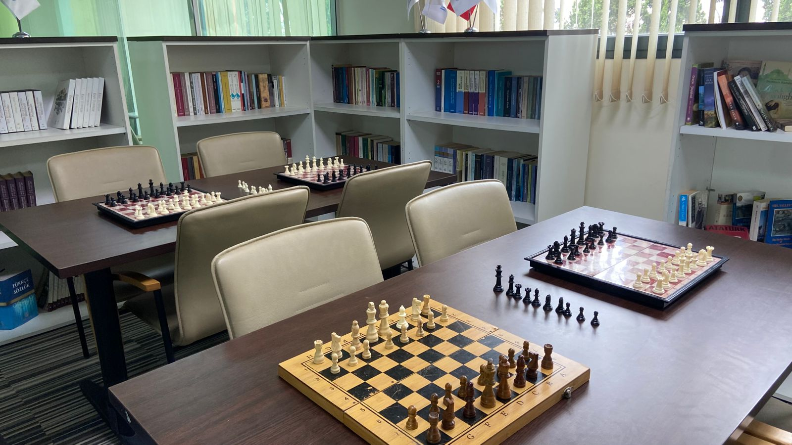
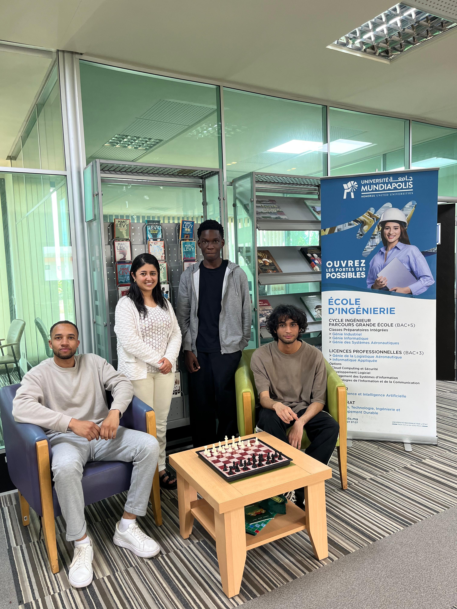

Vie Associative
Campus Life &
Campus Life &
Activities






Élève-Ingénieur en Cybersécurité à l'Université Mundiapolis, passionné par la Sécurité Cloud et le DevSecOps, actuellement en recherche d'un PFE stimulant.
Élève-Ingénieur en dernière année du cycle d'Ingénieur d'État en Cybersécurité à l'Université Mundiapolis, je prépare activement mon Projet de Fin d'Études (PFE). Doté d'une formation scientifique rigoureuse et d'un profil d'ingénieur polyvalent, je m'intéresse de près aux enjeux globaux de résilience et de sécurité des systèmes d'information.
Je porte un intérêt tout particulier pour la Sécurité Cloud, le DevSecOps et la conception d'architectures hybrides sécurisées. À travers mes projets et mes réalisations concrètes, j'explore avec enthousiasme le durcissement d'infrastructure, les audits de sécurité et la supervision continue, animé par la curiosité technique et la volonté d'apprendre continuellement.
Ingénieur Cybersécurité @ Mundiapolis
Casablanca, Maroc
Français (Courant) · Anglais (Intermédiaire) · Arabe (Natif)
Esprit d'analyse · Rigueur · Adaptabilité · Travail d'équipe
Université Mundiapolis — Le campus de Nouaceur, Maroc
Dernière année du cycle d'ingénieur (En cours)
Option : Sécurité et Gestion des Risques artificielles
Université Hassan II — Faculté des Sciences Ben M'sik
Électronique, Systèmes Embarqués et Télécommunications
Université Hassan II — Faculté des Sciences Ben M'sik
En sciences de la matière physique, Casablanca
Sciences Physiques, Casablanca
Conception Full Stack d'une plateforme d'apprentissage : sécurisation de l'API (Laravel), gestion rigoureuse des accès et prévention des vulnérabilités courantes (XSS, SQLi, Rate Limiting). Intégration d'un moteur de recommandation IA (Python) aux flux de données sécurisés.
Développement d'un dashboard administratif web sécurisé (Next.js, TypeScript, authentification JWT). Ce portail consomme l'API RESTful d'une plateforme E-commerce (Python/Flask) en appliquant des règles d'autorisation strictes, alignées sur les recommandations de l'OWASP.
Déploiement de défenses réseau (WireGuard, IDS) et durcissement d'une infrastructure AWS / On-Premise via l'application des référentiels CIS et la conduite d'audits de sécurité (PingCastle, BloodHound, Prowler).
Conception et sécurisation d'une infrastructure réseau multi-DMZ avec OPNsense. Architecture cible pour une Startup : de la définition de la matrice de flux à la configuration pratique et au filtrage étanche.
Déploiement d'une infrastructure de monitoring cloud sur AWS. Mise en place d'une solution conteneurisée de supervision proactive et d'alerting pour assurer la haute disponibilité.
Déploiement d'une solution de contrôle d'accès réseau (NAC) avec PacketFence. Intégration avec Active Directory et sécurisation des accès réseau filaires et sans fil via RADIUS.
Full-Stack Digital Banking platform with AI Assistant (RAG). Features intelligent conversational banking powered by Retrieval-Augmented Generation.
Complete e-commerce application built with Flask, featuring product management, cart, and secure checkout flow.
Desktop application for employee management built with Java Swing, featuring CRUD operations and comprehensive reporting.
A custom-built search engine with indexing, ranking, and query processing capabilities.
Smart parking management application designed to optimize parking space utilization and improve user experience.
Comprehensive management system for a medical center built with Odoo 17 ERP. Includes modules for patients, appointments, and medical records.
Data cleaning and optimization pipeline for Machine Learning models — transforming raw data into ML-ready datasets.
IBM SkillsBuild Cybersecurity Program
Jan 2026AWS Academy Cloud Foundations
Déc 2025Huawei Certified ICT Associate — Cloud Computing
Jan 2026Huawei Certified ICT Associate — Artificial Intelligence
2026Cisco Networking Academy
2026




Actuellement à la recherche d'un Projet de Fin d'Études (PFE) stimulant en Cybersécurité, Sécurité Cloud & DevSecOps. N'hésitez pas à me contacter !